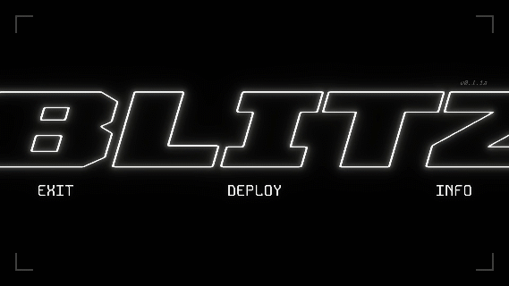

BLITZ is an endless runner where you must get as far and destroy as much as possible in a dash across cyberspace. Jump from window to window and slash through nodes and connections to get points or different kinds of boosts.
Being my first ever project on my Game Design course in college, this was mostly an expression of my already existing skills and the one I had the most energy for. It was somewhat inspired by Geometry Dash, and the would've-been narrative of the game is taken from a wider worldbuilding project I was previously working on.
This was my first encounter with the professional development timeline of pre-production -> production -> evaluation, and it didn't go very well. A lot of features I wanted to add are missing, like breakable walls, more vfx, and any evidence of the aforementioned narrative at all. Regardless, the game's visuals were received well, and it also features a neat algorithm that considers the player's next possible trajectories to place new platforms fairly.